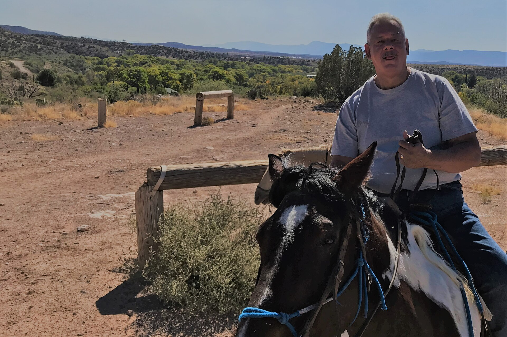

Looking for an unforgettable way to explore Arizona's red rocks? Horseback riding in Sedona offers stunning views, peaceful trails, and a taste of the Old West, all from the saddle.
Whether you're a complete beginner or an experienced rider, these guided rides let you experience Sedona's iconic landscapes up close. From river crossings to vineyard views, here's how to plan the perfect horseback adventure.
Sedona isn't just about hiking! It's a once-in-a-lifetime experience! The surrounding Verde Valley offers diverse terrain, from red rock formations to lush riverbanks, making every ride a scenic adventure.
Most commercial horseback adventures operate outside downtown Sedona, where riders can enjoy breathtaking views of the red rocks, desert landscapes, and wide-open spaces. With options ranging from one-hour trail rides to longer excursions, there's something for everyone.
Trail Horse Adventure is providing one-hour and 1.5-hour horseback riding tours near Sedona, making it a great option for families and first-time riders.
Located around Dead Horse Ranch State Park, guided rides feature stunning mountain views, cottonwood trees, and peaceful river crossings along the Verde River.
Depending on your selected trail ride, you may also enjoy sightings of the ancient Tuzigoot ruins while learning about the area's rich history from your guide.
Check Horseback Riding Tour Availability
Want to channel your inner cowgirl or cowboy? Horsin' Around Adventures is a family-owned operation that offers a truly authentic Western experience, complete with cowboy hats and a genuine connection to the land.
This experience combines rich history, canyon terrain, and the chance to learn about the land from passionate guides.
The ranch also has a background in raising, training, and rehabilitating horses. Its family-friendly atmosphere makes it ideal for riders of all levels.
Explore Horsin' Around Trail Rides
For something different, consider horseback riding alongside Alcantara Vineyards in Camp Verde, approximately 25 minutes from Sedona.
Wild Western Horseback Adventures offers guided rides through vineyard scenery, with breathtaking mountain views and a relaxing atmosphere.
It's a unique way to immerse yourself in Arizona wine country. After your adventure, plan time to visit a local winery or enjoy a wine tasting.
View Vineyard Horseback Riding Tours
Most horseback riding tours move at a relaxed walking pace, with guests following their guide in single file.
There's typically no fast riding, making these experiences accessible to beginners who may feel a little nervous about getting into the saddle.
Tours commonly last one to 1.5 hours, although longer options may be available depending on the operator and season.
Closed-toe shoes and long pants are essential for comfort and protection from desert brush.
Bring sunscreen, a regular-sized water bottle, and arrive approximately 30 minutes before your scheduled adventure, or as instructed by your outfitter.
Many operators require riders to be at least six or seven years old, although vineyard rides may have higher minimum ages.
Weight limits commonly fall around 250–265 pounds, but requirements vary by ranch and individual horse.
Arizona horseback riding involves inherent risks, so expect to sign a liability waiver before beginning your guided ride.
The ride most people start with is the Sedona Horseback Ride at Dead Horse Ranch — the Trail Horse Adventures ride above, with a Verde River crossing in Cottonwood. You can also browse all the rides on our Sedona horseback tours page.
Enjoy stunning mountain views and peaceful river crossings; Sedona horseback riding offers a variety of adventures for families, couples, and solo travelers.
Choose the perfect experience, check availability, and book ahead, especially during busy spring and fall travel seasons.
The Dead Horse Ranch ride crosses the Verde River under the cottonwoods — book it ahead, especially in spring and fall.